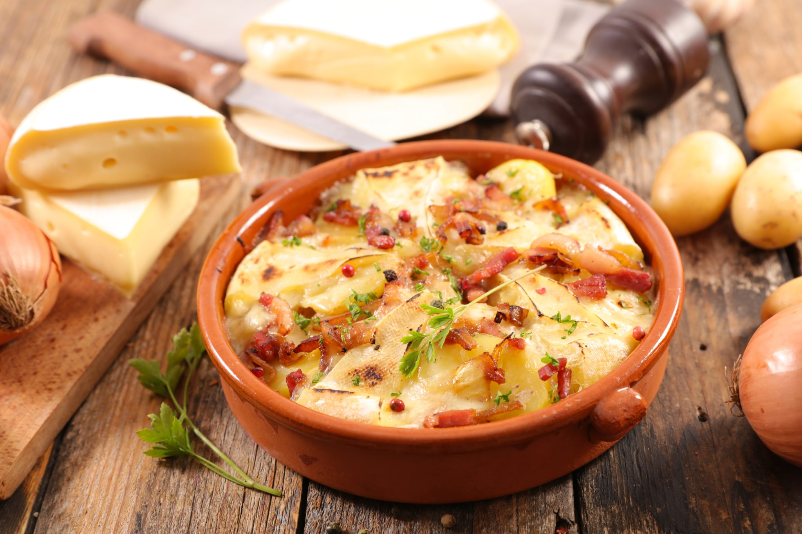

Main Page
Tartiflette

The traditional tartiflette
No more small summer salads! To combat the harsh winter cold, nothing beats the generosity of tartiflette. Originally from Savoie, this gratin dish was initially created to showcase a local cheese star: Reblochon. Prepared with potatoes, sour creams, bacon, and onions, it is a warming and convivial dish that brings the spirit of the mountains to the table.
Ingredients
- Potatoes - 1.5 kilograms
- Reblochon cheese - 500 grams
- Smoked bacon strips - 150 grams
- Crème fraîche - 100 grams
- Dry white wine - 1 glass
- Onions - 3
- Oil - 3 tablespoons
- Coarse salt - 1 tablespoon
- White pepper - 10 grains
- Nutmeg - 1 pinch
Steps
- Cooking the potatoes: Wash the potatoes thoroughly. Fill a large pot with water and add coarse salt. Place the potatoes in the water and cook for 20 minutes after the water returns to a boil.
- Preparation of the filling: Peel and slice the onions, making sure to remove the germ. Heat the oil in a frying pan and sauté the sliced onions. When they become translucent, add the smoked bacon strips. Continue cooking, stirring regularly with a wooden spoon, until the onions and bacon are golden brown. Deglaze the pan with the white wine and continue cooking for 5 minutes. Set aside.
- Preparation of potatoes and Reblochon cheese: Preheat the oven to 200°C (gas mark 6-7). Cut the Reblochon cheese into long strips. Crush the white peppercorns in a mortar. Peel the cooked potatoes and cut them into thick slices.
- Preparation of the gratin and assembly of ingredients: Butter a large baking dish or small individual containers. Sprinkle with nutmeg and crushed white pepper. Arrange the potatoes, then the onions and bacon browned in white wine. Cover with crème fraîche, then spread the cheese slices on top. Bake the tartiflette for 30 minutes, until the Reblochon cheese forms a golden brown crust.
- Serving tartiflette: Serve your delicious tartiflette piping hot, straight from the oven, accompanied by a fresh green salad with vinaigrette dressing and a glass of Savoie white wine.